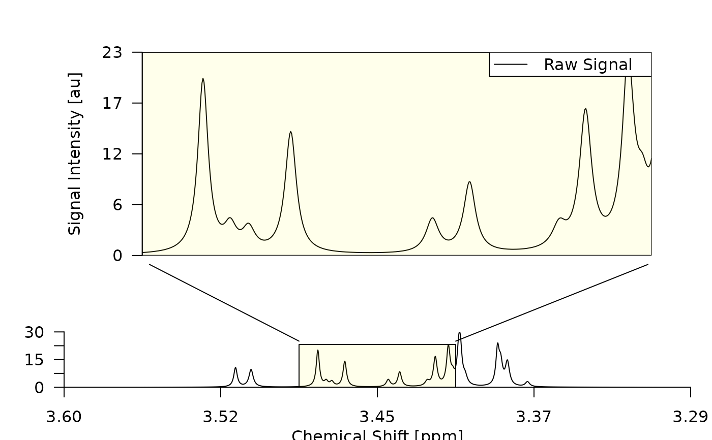

Simulates a 1D NMR spectrum based on the provided parameters.
![[Experimental]](figures/lifecycle-experimental.svg)
Usage
simulate_spectrum(
name = "sim_00",
seed = sum(utf8ToInt(name)),
ndp = 2048,
npk = 10,
csres = 0.00015,
cs = seq(from = 3.6, length.out = ndp, by = -csres),
pkr = quantile(cs, c(0.25, 0.75)),
fqref = 600252806.95,
x0 = sort(runif(npk, pkr[1], pkr[2])),
A = runif(npk, 2.5, 20) * 1000,
lambda = runif(npk, 0.9, 1.3)/1000,
noise = rnorm(length(cs), sd = 1200)
)Arguments
- name
The name of the spectrum.
- seed
The seed for the random number generator.
- ndp
The number of data points in the spectrum.
- npk
The number of peaks in the spectrum.
- csres
The chemical shift resolution in PPM.
- cs
The vector of chemical shifts in PPM.
- pkr
The start and stop of the peak region in PPM.
- fqref
The reference frequency in Hz.
- x0
The peak center positions in PPM.
- A
The peak area parameter.
- lambda
The peak width parameter.
- noise
The noise to add to the spectrum.
Value
A spectrum object as described in Metabodecon Classes.
Examples
simA <- simulate_spectrum("simA")
simA_copy <- simulate_spectrum("simA")
simB <- simulate_spectrum("simB")
simC <- simulate_spectrum("simC", npk = 20)
plot_spectrum(simC)

if (!identical(simA, simA_copy)) stop()
if ( identical(simA, simB )) stop()